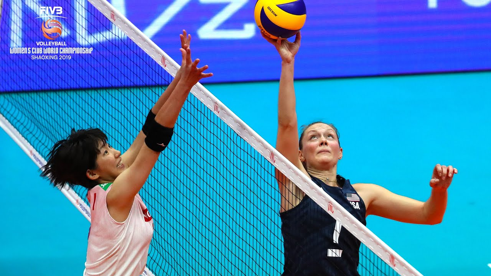
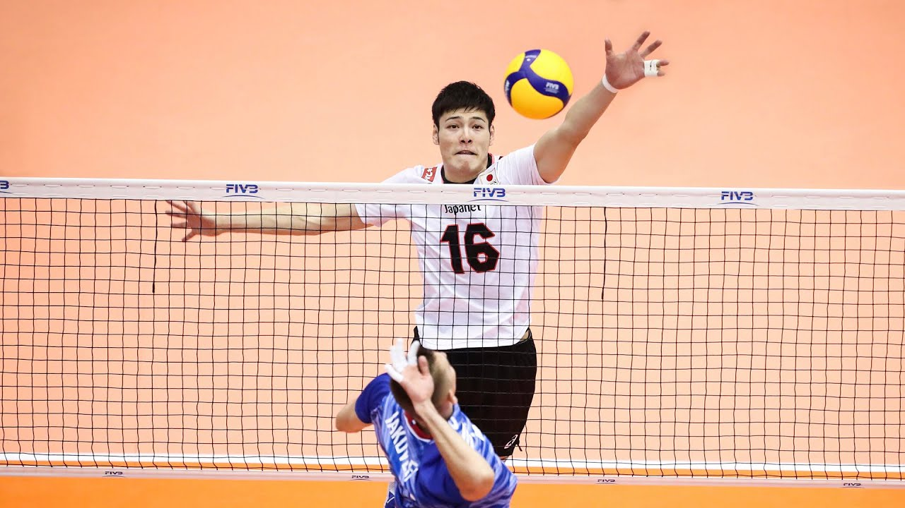
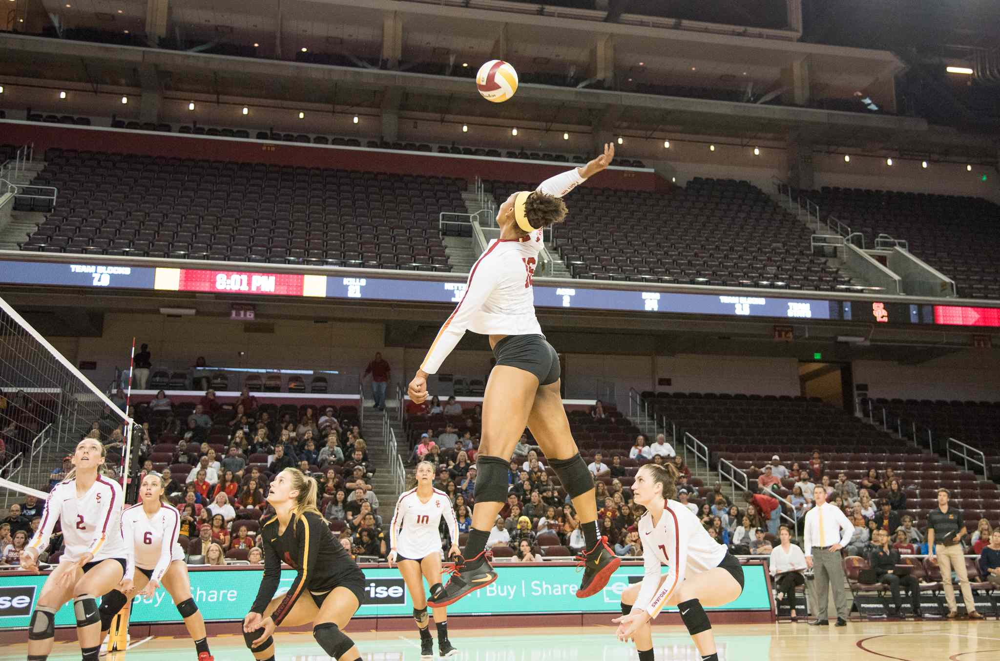
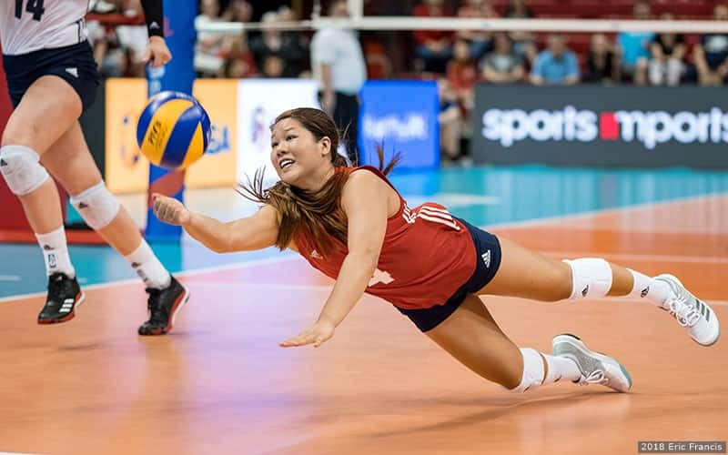
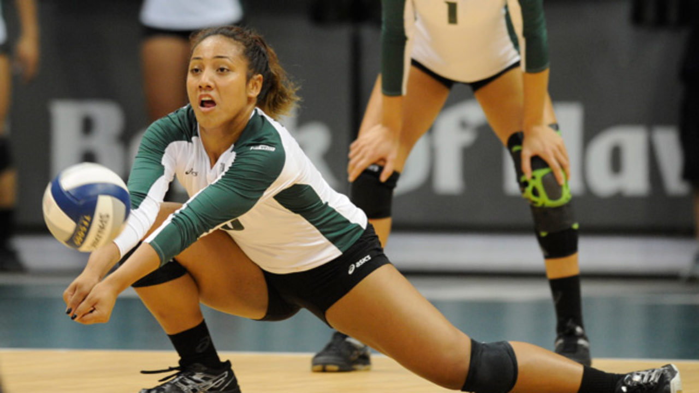

Contacting the net with any part of your body is prohibited
Consecutively contacting the ball is prohibited
Having more than three cvontacts before crosssing the plane of the net is prohibited.
Players must rotate after every sideout (the termination of a teaws right to serve)
Any contact on the body is a legal touch
If the ball contacts the ground on the opposing teams court, within the court lines, your team will gain a point.
Every rally is introduced by a serve from the tea, that gained a point from the previous rally.
Any player rotated into the back row can not jump in front of the 3 meter line (the attack line).
there are 6 positions on the court, as illustrated above
1 & 2: Setter & Rightside

The role of setters is to 'set up' the hitters to attack. They primarily take second contact.
Rightsides hit and block from the right side of the court
3: Middle Blockers

Middles play an important role in defense at the net. They are responsible for preventing opponent attakers from scoring by blocking. They traditionally do not serve receive or play defense, but run various attacks in the front row.
4 & 6: Leftsides

Leftsides are the leading attackers on the court. They attack, defend, serve receive, block and serve.
5: Libero

Liberos are the leadeing passers on the court. They substitue the middle after they serve and play defense in their place. They are not permitted to play front row or serve, overhand contact the ball in front of the thre meter line, or contact the ball above the plane of the net.
Defensive Sprcialists

Defensive specialists are alike to the libero, in that they specialize in back row defense, but they are permitted to serve and attack